I tell stories with words — and sometimes a bit of code
I'm a journalist working for two Sunday newspapers in Switzerland. I'm part of a small team focusing on investigation and I like to dig into the data to find good stories to tell. Sometimes I make interactive graphics which allow our readers to explore the data by themselves. I code in javascript, python and php. I also do training for colleagues covering data journalism.
An interactive map with all the 200 000+ car crashes in Switzerland since 2011. User can zoom until street level to see where crashes happened in his neighborhood.
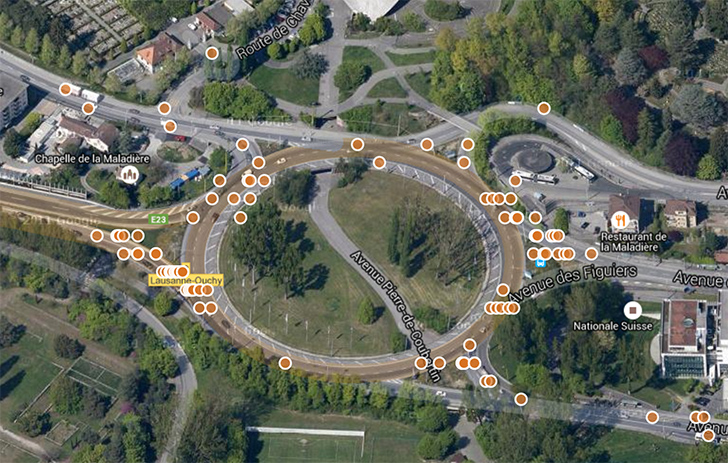
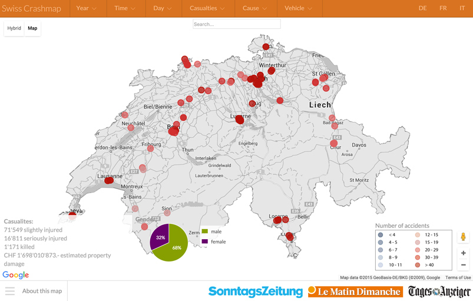
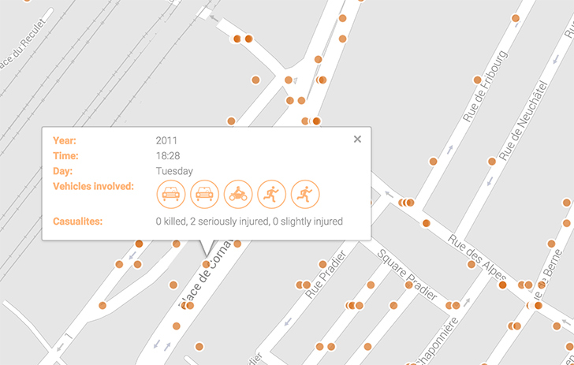
The Rise of Car Crashes Caused by Elderly Drivers
We analyzed the car crashes data and published several stories. The most recent one is about the rise of crashes caused by people aged of 70+.
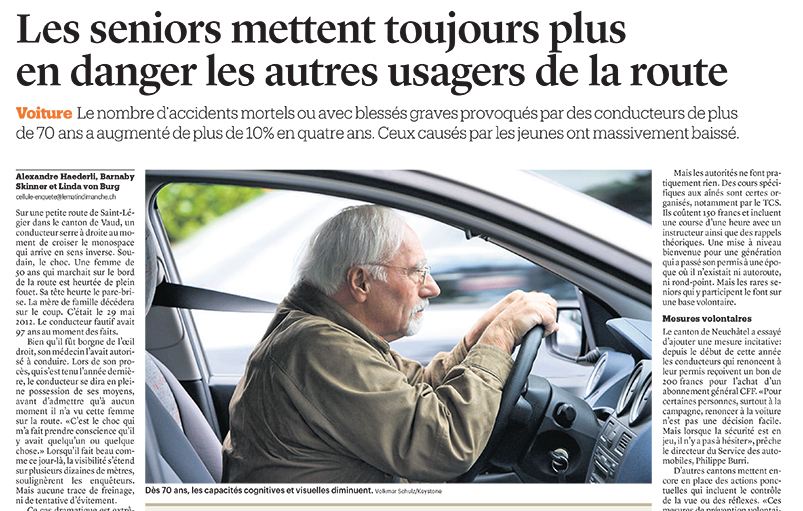
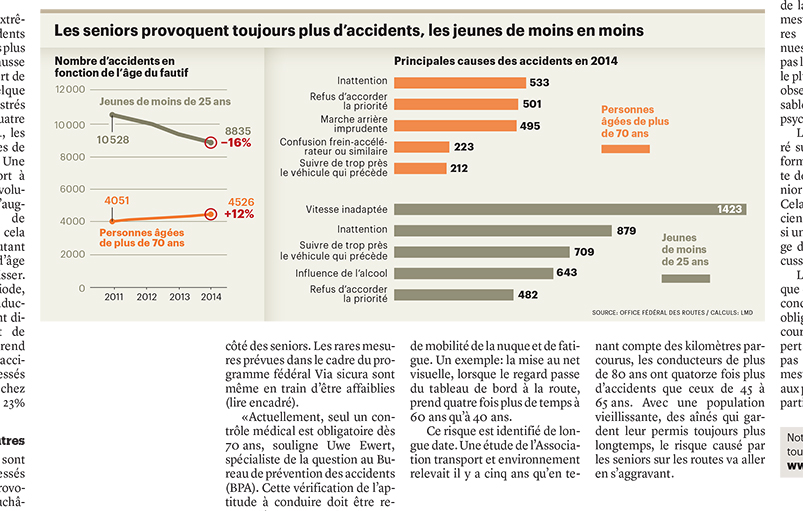
Breaking into Parliamentarians' Laptops
We hired a security expert to hack high level parliamentarians. He managed to get sensitive documents, like minutes of confidential meeting, in two cases out of three.
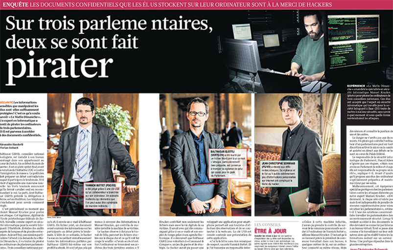
Tracking Stolen Bikes with GPS
We equipped bikes with a GPS system hidden in the light. We let bikes get stolen in three cities and followed the thieves. The result is available in three storymaps made with the awesome Knight Lab's Storymaps.js.
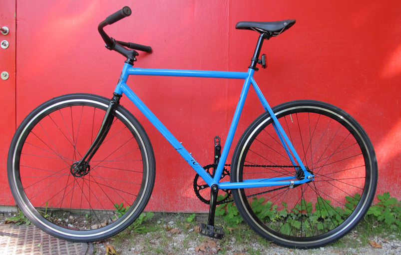
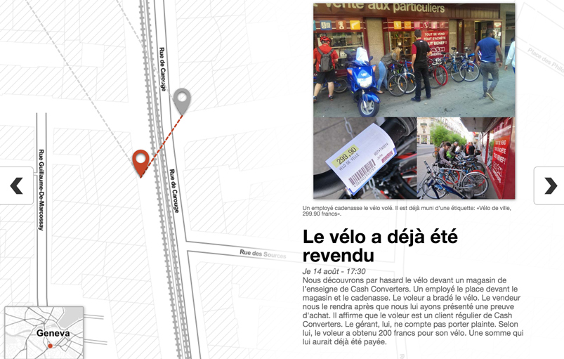
Looking for Vulnerable Infrastructures on the Internet
We used search engine Shodan to look for unsecure connected devices. We found a lot of private unprotected NAS and webcams. And also some SCADA system like the door looking system of one of the biggest football stadium in the country.
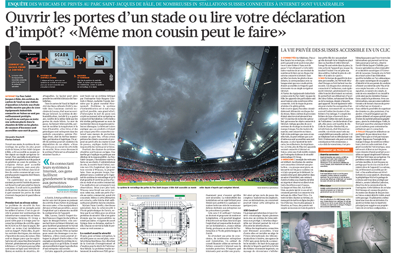
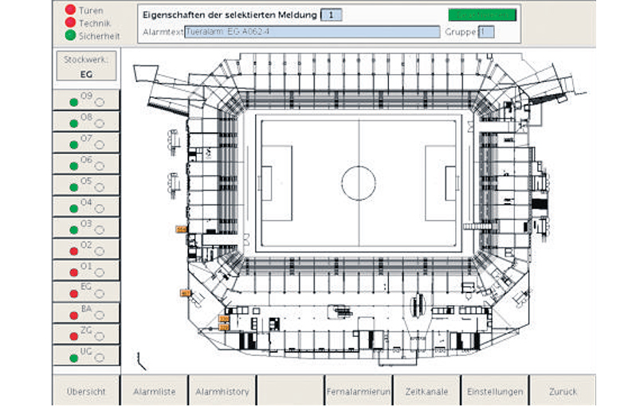
Swiss Police Forces own 900 Speed Cameras
Thanks to a Freedom of Information Act (FOIA) request - and 18 months of patience, we managed to know exactly how many speed cameras are active in Switzerland. And who owns them. The details were made available in a d3.js infographic.
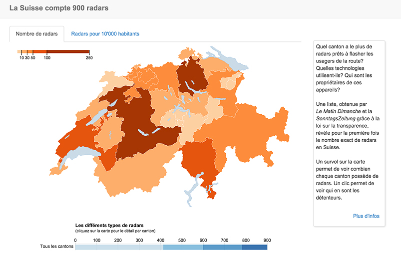
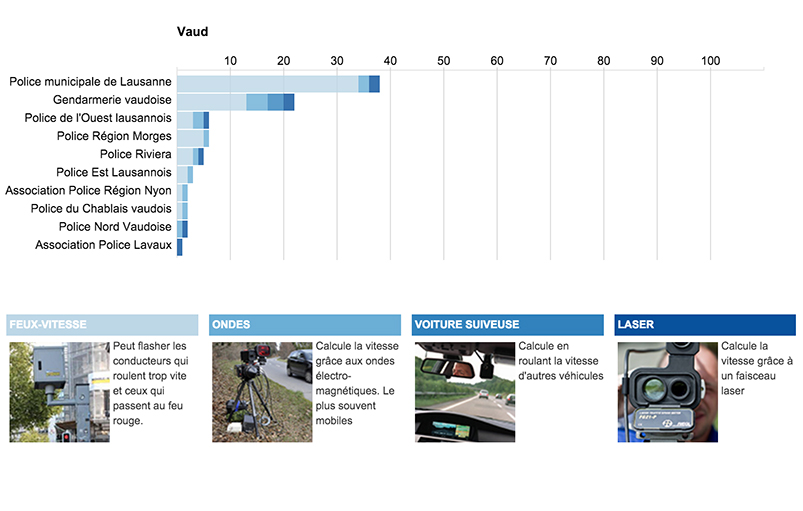
The First Known Case of a Swiss Jihadist
No data involved here. We told the story of a young jihadist from Switzerland after he came back from Syria. We revealed that for the first time the Swiss Federal Prosecutor opened an investigation against a jihadist.
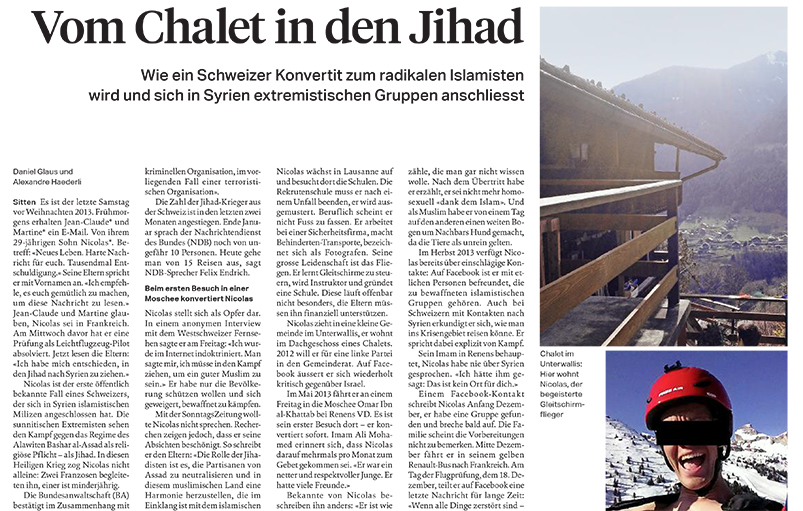
Nursing Homes in Numbers
We crunched 60+ variables of each 1558 nursing homes for elderly people in the country. We hit a big story on how some of them spare money on the back of old people and nurses. And we published an online map with easily understandable informations.